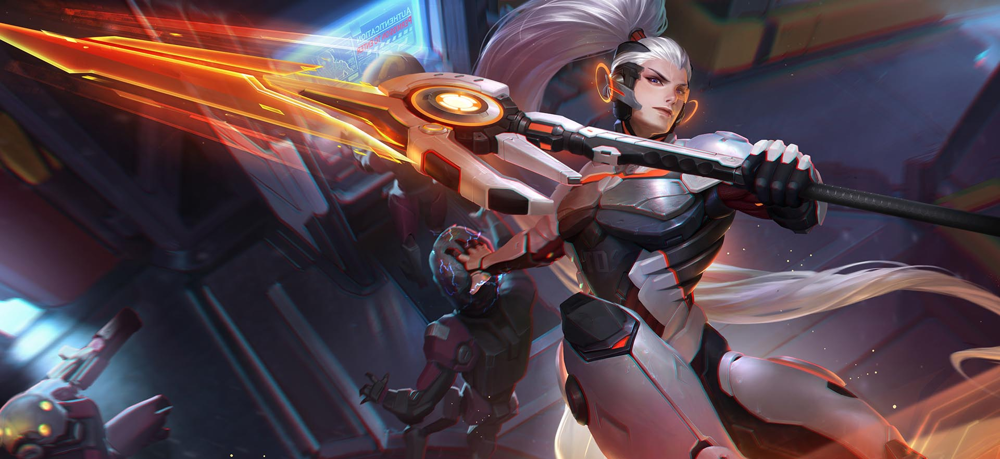
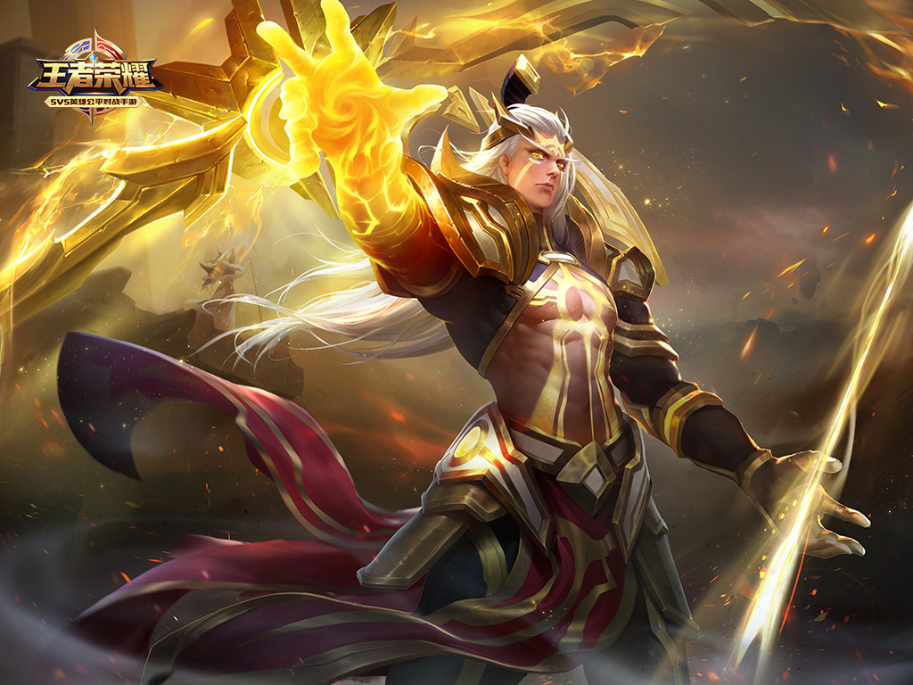

更新中
国士无双:韓信
技能介紹:主一副二，有大点大。韩信适合打野，能够快速升级提升自己的战斗力。然后出一些加物理输出和血量的小件装备，就可以去线上帮助队友Gank。在打野方面，先红开，然后从下路抓到上路，争取三路开花。出裝介紹:
- 巨人之握
- 抵抗之靴
- 泣血之刃
- 宗师之力
- 暗影战斧
- 名刀司命
出裝分析
打野出装思路：巨人之握增加血量，让韩信在战场上游刃有余。抵抗之靴增强韧性，减少控制技能对韩信灵活性的影响。增加物理攻击和吸血效果，让韩信可以通过野怪和兵线回复自身血量，增加续航能力。宗师之力可以提高韩信各方面的属性，最后名刀司命提高容错率，如果对面肉多可以换成碎星锤。
绝代智谋:诸葛亮
诸葛亮作为强力法师，红色梦魇提升法术攻击、法术穿透，保证打出强力伤害。绿色怜悯提升技能冷却，保证可以多放技能、多打出被动，对敌人造成高额伤害。蓝色轮回提升法术吸血能力，在对战中保证生存能力以及续航能力。
技能加点建议:
- 主升:东风破袭
- 副升:时空穿梭
- 召唤师技能:闪现/净化
出裝分析
- 抵抗之靴
- 噬神之書
- 痛苦面具
- 极寒風暴
- 虚无法杖
- 博学者之怒
半神之弓:后羿
铭文搭配建议:
- 红月:攻速加成+1.6%+暴击率+0.5%
- 鹰眼:物理攻击力+0.9+物理穿透+6.4
- 隐匿:物理攻击力+1.6+移速+1%
技能介绍:
- 惩戒射击 (冷却值：0 消耗：0)
- 多重箭矢 (冷却值：10消耗：60)
- 落日余晖 (冷却值：8/7.4/6.8/6.2/5.6/5消耗：60)
- 灼日之矢 (冷却值：45/40/35消耗：130)
- 主升:落日余晖
- 副升:多重箭矢
- 召唤师技能:闪现/治疗术
- 急速战靴
- 末世
- 闪电匕首
- 破晓
- 无尽战刃
- 泣血之刃
后羿的普攻命中敌人后增加自身10%攻击速度，可叠加至多3层。当攻速加成叠加到3层时，后羿的普攻将射出3支箭矢，每支箭矢造成原伤害的40%，强化持续3秒。（期间每次命中刷新持续时间）
后羿强化自身攻击，每次攻击造成200/240/280/320/360/400（+50%物理加成）点物理伤害（若触发惩戒射击则每支箭矢造成原伤害的40%）并对面前区域内另外2名敌人造成50%伤害，该效果持续5秒
后羿命令日炙塔对指定区域进行攻击，短暂时间后召唤一束激光打击指定位置。对命中的敌人造成300/350/400/450/500/550（+50%物理加成）点法术伤害和30%减速效果，持续2秒，被中心点命中的敌人将受到额外50%的伤害且受到50%的减速效果
后羿向指定方向射出火焰箭。击中敌方英雄时会将其眩晕并引发爆炸，爆照对范围内的敌人造成700/1000/1300（+90%物理加成）点物理伤害；被火焰箭直接命中的敌方英雄将会根据火焰箭的飞行距离眩晕0.5~3.5秒
技能加点建议:
出装建议:
天籁弦音:蔡文姬

铭文搭配建议:
- 圣人:法术攻击力+5.3
- 均衡:物理防御力+5+法术防御力+5
- 长生:最大生命+75
技能介绍:
- 长歌行 (冷却值：0消耗：0)
- 思无邪 (冷却值：15/14.4/13.8/13.2/12.6/12消耗：100)
- 胡笳乐 (冷却值：9消耗：70)
- 忘忧曲 (冷却值：60消耗：120)
被动：当蔡文姬受到伤害时，自身会立刻增加70%持续衰减的移动速度，持续2秒，同时自身会每秒回复250（+50%法术加成）点生命值，持续2秒；长歌行每10秒只能触发1次
蔡文姬演奏乐曲，自身会增加20%移动速度，持续3秒，同时将为自身和周围的友方英雄每0.5秒恢复60/66/72/78/84/90（+20%法术加成）点生命值，持续3秒
蔡文姬向指定方向弹奏一束音波，命中后会在敌人间弹射，每次弹射造成250/290/330/370/410/450（+36%法术加成）点法术伤害并将其眩晕0.75秒；每束音波最多弹射6次，同一目标最多受到2次弹射效果，第二次弹射命中时将只造成50%的初始伤害
蔡文姬释放琴音围绕四周，每0.5秒为范围内血量最低的友方英雄回复100/150/200（+60%法术加成）点生命值，持续5秒，同时为其增加300/375/450（+25%法术加成）点物理和法术防御
Tips：蔡文姬是一个辅助英雄，红色法术强度可以提升主动技能和被动技能的恢复能力，长生可以提升坦克强度，在初期中期很难被击杀，在前期可以多次触发被动创造丝血逃生的机会，均衡可以提升双抗让蔡文姬放心为队友恢复血量。
技能加点建议:
- 主升:思无邪
- 副升:胡笳乐
- 召唤师技能:弱化/治疗术
出装建议:
- 近卫荣耀
- 抵抗之靴
- 圣杯
- 极寒风暴
- 博学者之怒
- 梦魇之牙